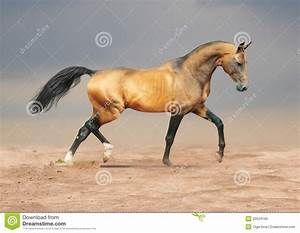
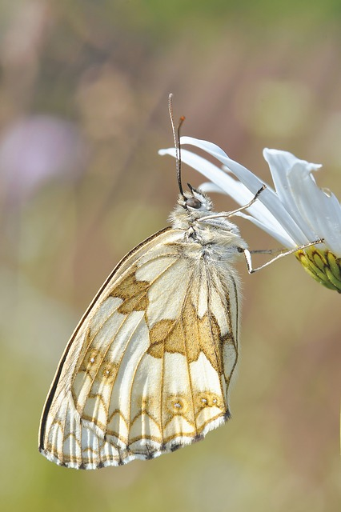
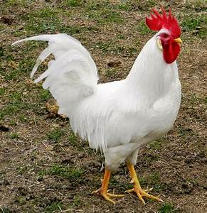
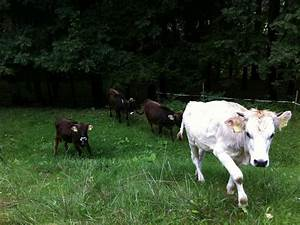

Training History

Grafik ini menunjukkan nilai akurasi dan loss untuk training dan validasi.
Ismat Yulian — Pertemuan 15 — Machine Learning
Lihat RepositoryProject ini adalah implementasi Convolutional Neural Network (CNN) untuk klasifikasi gambar hewan. Dataset terdiri dari 8 kelas: cane, cavallo, elefante, farfalla, gallina, gatto, mucca.
Skrip utama meliputi train_cnn.py untuk pelatihan model, predict.py untuk prediksi gambar tunggal, dan cnn-animals.ipynb sebagai notebook analisis dan visualisasi.
Grafik ini menunjukkan nilai akurasi dan loss untuk training dan validasi.

Confusion matrix memperlihatkan performa model pada tiap kelas.




Unduh paket laporan lengkap yang berisi kode utama dan hasil pelatihan.
Download Report (.zip)